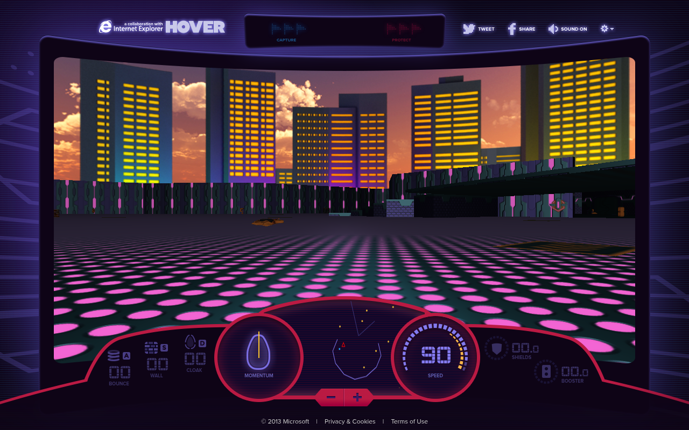

OPTIONALE ERWEITERUNG
Die mobile Fassung2026
Die späte Fassung mit Steuerkreuz, Aktionstasten und bildschirmfüllender Ansicht. Auf Mobilgeräten der direkte Einstieg, am PC frei wählbar.
Modifizierte Fassung starten THE ARCHIVE
THE ARCHIVE
DAS WEB-REMAKE VON 2013
Gleiten. Ausweichen. Flaggen schnappen.
Hover! ist wieder da — mit zwei gesicherten Webfassungen und einer neuen Fassung für Touch und Vollbild.

01 / WEBFASSUNGEN
Zwei Zeitstände. Eine neue Bedienung.
Ohne Installation direkt loslegen.
OPTIONALE ERWEITERUNG
Die späte Fassung mit Steuerkreuz, Aktionstasten und bildschirmfüllender Ansicht. Auf Mobilgeräten der direkte Einstieg, am PC frei wählbar.
Modifizierte Fassung startenLETZTER GESICHERTER WEBSTAND
Die letzte gefundene Überarbeitung des Web-Remakes. Gesichert aus der Website vom März 2019.
Späte Fassung startenZURÜCK ZUM ANFANG
Der früheste gefundene Webstand vom 2. Oktober 2013. So begann die Rückkehr des Windows-Klassikers.
Frühe Fassung starten02 / WINDOWS-ARCHIV
Beide gesicherten Store-Pakete als vollständige ZIPs.
Für Windows 8.1 / RT — unverändert aus dem Archiv.
Spielpaket mit zusätzlichen Anzeigeskalierungen
Spielpaket mit den mitgelieferten Zertifikatsdateien
Zwei unterschiedliche Pakete, dieselbe Spielversion. Die Archive wurden auf Integrität geprüft; eine Installation auf aktuellen Windows-Versionen ist nicht zugesichert.
BEWAHREN. WEITERSPIELEN.
Die Website, ihr Spielcode und ihre Ressourcen wurden aus dem Internet Archive gesichert. Fehlende Dateien wurden, soweit möglich, aus den erhaltenen Store-Paketen ergänzt. Originale und Anpassungen sind im Repository nachvollziehbar getrennt.
Beide Webfassungen enthalten alle drei Arenen und den Retro-Modus. Fehlende Soundvarianten wurden durch Store-Audio ergänzt; Ogg-Ersatzdateien ermöglichen die Wiedergabe in weiteren Browsern. Abweichende Texturpfade und verfügbare Ersatztexturen sind dokumentiert.
Die ursprünglichen Multiplayer-Server und eingebettete Werbevideos sind nicht Teil der Wiederherstellung. Die Browserfassungen sind rekonstruierte Spielstände, keine behaupteten bytegenauen Komplettkopien der damaligen Website.
Wiederherstellungsbericht lesen ↗